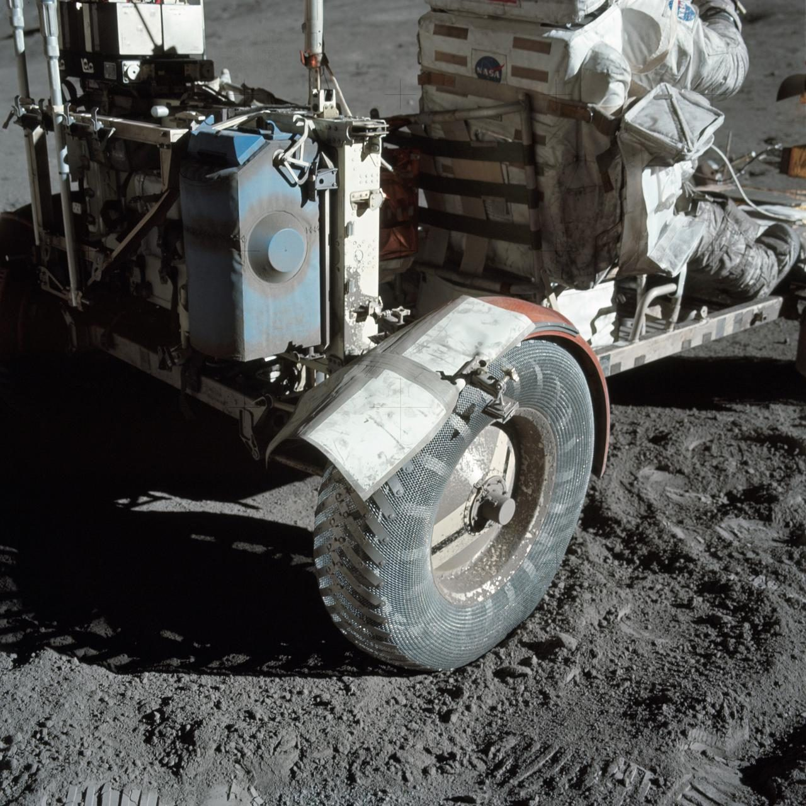

An archive of the machines we left behind
They stopped talking.
Their stories didn’t.
Since 1964, NASA has left rovers, landers, Moon cars and science stations on other worlds — and sent probes sailing out of the solar system. Meet them, hear their “ghost logs”, and find out what they discovered.
Teacher or parent? Get the free lesson plans, worksheets and class quiz →

- 1Pick a world on the Ghost Map or in 3D.
- 2Open a dossier to hear the machine’s ghost log.
- 3Collect badges in your explorer passport.
Ghost Map
Where are they now?
Every glowing marker is real hardware, placed at its true latitude and longitude. Tap one to open its dossier.

Double-click to zoom · drag to move
Ghost Logs
Twelve machines tell their own stories
Short chapters written from each machine’s point of view, based on real mission data. Use the arrows or your keyboard (← →).
How it worked
How do you land on another world?
Parachutes, airbags, sky cranes, crashing on purpose… Pick an animation and press play, or step through it at your own pace.
Try landing on the Moon, on Mars and in Jezero crater yourself, with real gravity.
Then & now
Still there, years later
Drag the slider (or use the arrow keys) to switch between a photo taken during the mission and a view of the same place years later.
Timeline
Sixty years of leaving things behind
Scroll sideways through the decades. Colours show where each machine went.
Elsewhere in the Solar System
From Mercury to the stars
NASA hardware also rests on Mercury, sank into Venus, Jupiter and Saturn, circles a dwarf planet, sits on an asteroid and a comet, and some is still sailing out of the solar system. Distances for the travelling probes are estimates for today’s date, calculated from each probe’s speed.
Distance from the Sun in AU (1 AU = Earth–Sun distance, about 150 million km). Each step to the right is 10× farther.
Who am I?
Can you name the ghost?
Read the clue, pick the machine. Score 6 or more to earn the Archive Expert badge.
Ask the Archive
Still curious? Ask the ghosts.
Ask anything about the machines in this archive: how they landed, what they found, where they are now, or what they'd say if they could talk.
Answers come from this site's NASA mission facts, and it works offline. Open the full chat →
From the NASA Image and Video Library
The archive
Every picture and video on this site comes from images.nasa.gov. Click any image to see it large, with its NASA ID.
Listen: real sounds from space
Real recordings made by these machines, plus astronauts on the Moon. Sound needs air to travel, so most of space is silent. These were picked up on Mars and the Moon, or turned into sound from vibrations.
Videos
Photos
Space Exploration Mode
Fly around the Moon and Mars in 3D
Spin the globes, find the beacons, and travel out to where the Voyagers are now.